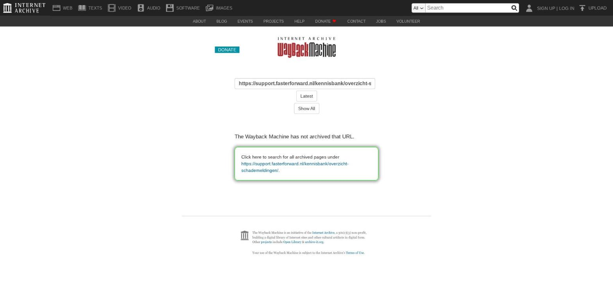

Documenten verplaatsen naar andere stukkenlijst

Tekstinhoud
Documenten verplaatsen naar andere stukkenlijst
In het klantdossier wil je diverse gegevens van de klant opslaan. Voor het opvragen van deze gegevens kan je gebruik maken van de stukkenlijst. Ieder product heeft zijn eigen stukkenlijst. Het is mogelijk om de (documenten gekoppeld aan de) stukken van het ene product naar het andere product te verplaatsen of koppelen.
Automatisch samenvoegen
Stukkenlijst handmatig verplaatsen
1. Kiezen van de producten
2. Stukken selecteren
Geen voorstel
3. Documenten verplaatsen
Systeemregistratie
Meldingen
Automatisch samenvoegen
Het automatisch samenvoegen gebeurt van de dienst naar de hypotheek en bij een nieuwe versie van de hypotheek. Bij een dienst naar de hypotheek houdt dit het volgende in: bij ontvangst van een documentaanvraag (DA-bericht) onder een hypotheekaanvraag (AX-bericht) worden stukken die in hetzelfde dossier onder een stukkenlijst van een dienst staan samengevoegd met openstaande stukken van de hypotheek. En als binnen dezelfde hypotheekaanvraag (hetzelfde product) een nieuwe aanvraag wordt ontvangen (een hogere versie) wordt de stukkenlijst hiermee automatisch samengevoegd.
Stukkenlijst handmatig verplaatsen
Het is ook mogelijk om handmatig gekoppelde documenten aan stukken te verplaatsen van de ene stukkenlijst naar de andere stukkenlijst. Dit is ongeacht de maatschappij in het product of productsoort waaraan de stukkenlijst is gekoppeld. Het handmatig verplaatsen gaat als volgt.
1. Kiezen van de producten
In de stukkenlijst klik je op de knop 'Stukken verplaatsen naar andere stukkenlijst'.
Er opent een nieuw scherm waarin je de producten dient te selecteren. Ten eerste selecteer je het product, waaronder al documenten onder de stukken geüpload zijn. Hierbij worden gearchiveerde producten, producten zonder stukkenlijst of producten met stukken waar geen documenten onder geüpload zijn uitgesloten.
Ten tweede selecteer je het product waar de documenten naar de (lege) stukken verplaatst moeten worden. Daarna klik je op 'Volgende'.
2. Stukken selecteren
Nadat je de producten hebt geselecteerd, kan je vervolgens selecteren welke documenten gekoppeld aan het stuk je wilt verplaatsten. Aan de linkerkant staat het product waaruit je stukken wilt verplaatsen. Hierbij staan:
De stukken waaraan documenten hangen (en de interne beoordeling niet 'Afgewezen' is). Hierbij staat een loepicoon waarmee je een preview kunt openen van het documenten. Zo kan je bijvoorbeeld de geldigheid van het document controleren.
De stukken waaraan documenten hangen, maar die de interne beoordeling 'Afgewezen' hebben. Deze zijn lichtgrijs weergegeven, omdat documenten hieronder niet verplaatst kunnen worden.
De stukken waaronder geen documenten hangen. Ook deze zijn licht van kleur.
Voor de stukken die genoemd staan bij punt 1 staat een checkbox. Met deze checkbox kan je aangeven welke stukken/documenten je wilt verplaatsen.
Rechts staat het product waarbij je de documenten aan stukken wilt koppelen. Achter de stukken die genoemd staan bij punt 1 komt er rechts een pulldown te staan. In deze pulldown doet eBlinqx een voorstel van een stuk. Bij dit voorstel wordt er gekeken naar de stukken onder beide producten en op basis van de volgende punten wordt het voorstel gedaan:
De aanwezigheid van het stuk (deze moet onder beide producten aanwezig zijn)
HDN code (deze moet gelijk zijn in beide stukken)
Protocol (deze moet gelijk zijn in beide stukken en kan je zien in Beheer – Documenten – Soort documenten beheer)
Geen voorstel
Indien er geen voorstel gemaakt kan worden dan komt de pulldown op 'maak uw keuze' te staan. Hier dien je zelf een keuze te maken. Ook kan je de checkbox uitvinken. De pulldown zal dan verdwijnen en het document zal niet worden verplaatst naar de stukkenlijst van het andere product.
Let op: het is niet mogelijk dat een pulldown op 'maak uw keuze' blijft staan. Je dient hier handmatig een keuze te maken of de checkbox uit te vinken. Ook is het niet mogelijk om bij twee stukken hetzelfde document te selecteren. Indien dit wel gebeurt dan wordt de dropdown rood.
3. Documenten verplaatsen
Nadat achter elk stuk met een document een keuze is gemaakt of de checkbox is uitgezet, kan je nog de keuze maken uit de volgende opties:
Document ontkoppelen van bestaande stukkenlijst. Deze staat standaard aangevinkt. De documenten worden dan ontkoppeld van de stukken die staan onder het product waarbij je documenten wilt verplaatsen. Vink je deze uit dan blijft het document gekoppeld staan aan het stuk onder beide producten. Let op: als deze staat uitgevinkt wordt er een kopie van het document gemaakt. Het document komt dan ook dubbel onder het tabblad Documenten te staan.
Bestaande stukkenlijst direct opruimen. Deze staat standaard aangevinkt. De stukkenlijst gekoppeld aan het product waarbij je documenten wilt verplaatsen wordt verwijderd (de documenten worden niet verwijderd, deze staan onder het tabblad Documenten in het klantdossier). Vink je deze uit dan blijft de stukkenlijst onder het product staan.
Als deze keuzes zijn gemaakt dan kan je klikken op 'Verwerken'.
Systeemregistratie
Nadat er op 'Verwerken' is geklikt, wordt er ook een systeemregistratie gemaakt. Zo is terug te zien wie en wanneer de actie is uitgevoerd. De systeemregistratie kan je terugvinden in het tabblad Communicatie – Registratie. In het zoekfilter zet je 'Systeemregistraties' op 'Toon'.
Meldingen
Er komt altijd een melding indien niet alle documenten gekoppeld aan stukken verplaatst worden van het ene product naar het andere product. Je heb dan een checkbox uitgevinkt. De melding die dan verschijnt, is 'Let op: niet alle documenten worden verplaatst naar de andere stukkenlijst. Deze documenten blijven wel opgeslagen in het tabblad 'Documenten'.
Wanneer er links stukken zijn aangevinkt, maar rechts staat het pulldown nog op 'maak uw keuze' dan verschijnt de melding 'Er zijn stukken in de linker stukkenlijst aangevinkt, waarbij nog geen stuk geselecteerd is in de rechter stukkenlijst. Vink in de linker stukkenlijst enkel stukken aan die u wilt verplaatsen. Stukken die niet zijn aangevinkt worden niet verplaatst.'
Laatste update: 15 oktober 2025
Was deze informatie nuttig?
Ja Nee